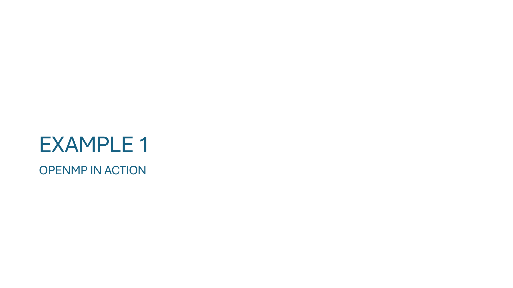
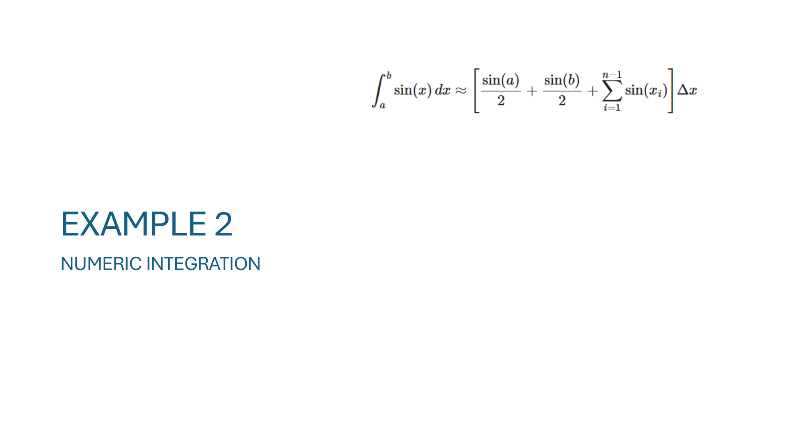
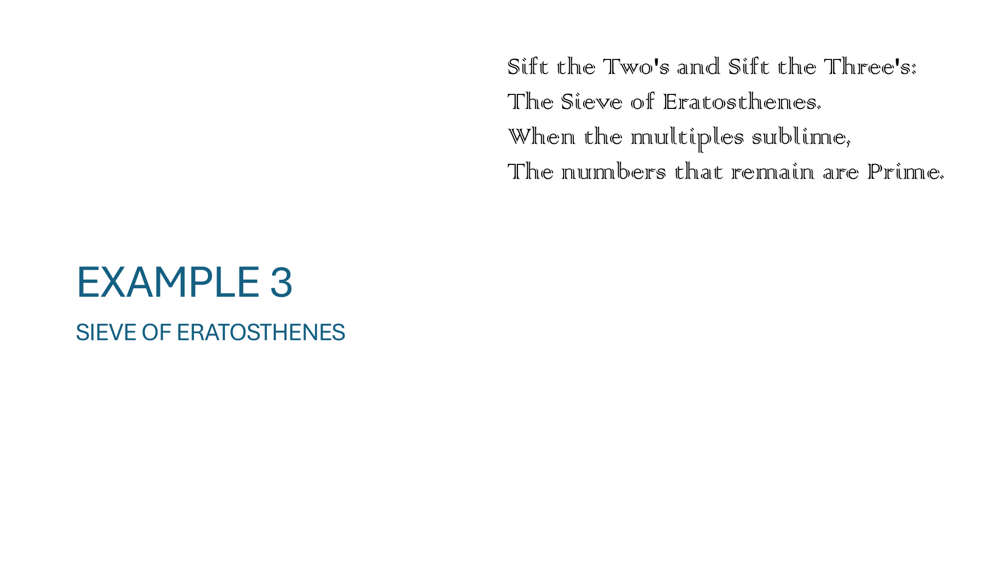
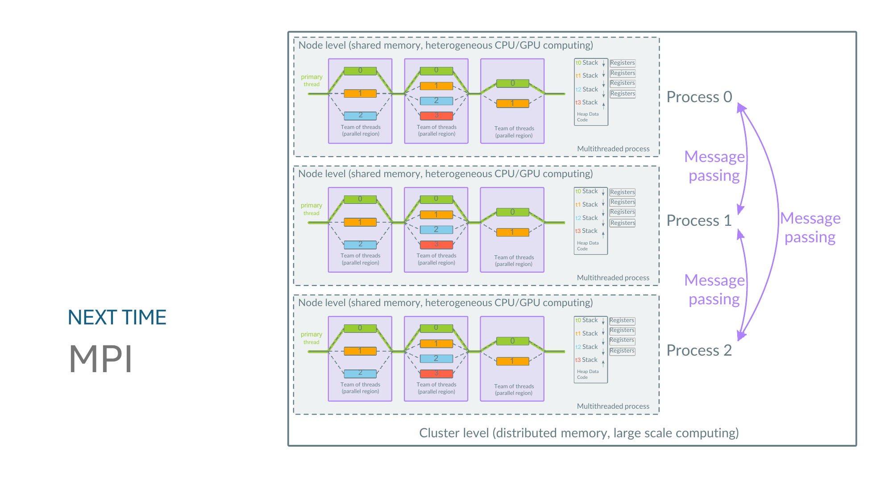

主题：Introduction to OpenMP（共享内存并行编程入门）
Lecture 6 的前半段（slide 2–5）是行政内容（期末考试时间、HW1 仓库、Gradescope 提交格式、SSH 集群暂缓使用），这里跳过。技术内容从 slide 6 开始。

这一页是 OpenMP 的"自我介绍"，正反两面分别说明 它是什么 和 它不是什么，目的是先把边界划清楚再开始用。
#pragma omp ...）—— 加在 C/C++/Fortran 源码里告诉编译器"这段并行化"。omp_get_thread_num()、omp_set_num_threads()）—— 程序运行时查询/设置线程信息。OMP_NUM_THREADS）—— 不改代码也能控制行为（比如启动多少线程）。-fopenmp 编译选项
这页讲 为什么 OpenMP 这么受欢迎，以及它和 MPI 在工程上的取舍。
横轴是"投入的时间和精力"，纵轴是"性能"。三条曲线代表三种并行化策略：
#pragma omp parallel for，原顺序版本仍然完整保留。这和 MPI 形成鲜明对比 —— MPI 通常要从架构层面重写。#pragma 默认忽略，所以一份源代码可以同时在支持 OpenMP 的环境（开 -fopenmp）和不支持的环境（不开就当顺序代码）下编译。GCC 必须加 -fopenmp 才会真正解释这些 pragma 并链接 libgomp 运行时；不加这个 flag 编译出来的就是单线程版。编译命令示例：
gcc -fopenmp -O2 my_program.c -o my_program ./my_program # 默认按机器核心数启动线程 OMP_NUM_THREADS=4 ./my_program # 用环境变量控制只跑 4 个线程
💡 这页的潜台词：OpenMP 的"低门槛"是它最大的优势 —— 投入小、风险低、保留顺序版本作为参照（可以方便地对比正确性）。

这页是整个 lecture 最重要的一页，给出了一个看似简单到不会出错的例子，揭示 并行编程的根本陷阱。
void increment() { ++count_; } // 看起来"一句"代码
C++ 源码看起来是一条语句，但 CPU 实际执行的不是一条指令。反汇编后可以看到 ++count_ 编译成 3 条机器指令：
mov edx, DWORD PTR [rax] ; ① load: 把内存地址 rax 处的值读到寄存器 edx add edx, 1 ; ② add: 寄存器 edx += 1 mov DWORD PTR [rax], edx ; ③ store: 把寄存器 edx 的值写回内存
这就是经典的 load–modify–store 三步组合。在单线程下没问题；在多线程下 —— 灾难。
左侧的紫色小图是关键：每个线程有自己独立的 stack 和 registers（程序计数器 PC 也是私有的），但 heap、data、code 段是所有线程共享的。count_ 是对象成员，在 heap 上 —— 所有线程访问的是同一份。
但 edx、rax 这些寄存器是 线程私有 的（每个线程有自己的 register file）。这意味着一个线程"读到 edx 里"的旧值，另一个线程是看不到的，仍以为内存里的值没变。
下面是一个会导致丢更新的交错（interleaving），假设初始 count_ = 5，两个线程同时调用 increment()：
时间 线程 0 线程 1 内存中 count_ ───── ───────────────────────────────────────── ───────────────────────────────────────── ──────────── t1 mov edx, [rax] ; T0.edx = 5 5 t2 mov edx, [rax] ; T1.edx = 5 5 t3 add edx, 1 ; T0.edx = 6 5 t4 add edx, 1 ; T1.edx = 6 5 t5 mov [rax], edx ; 写回 6 6 t6 mov [rax], edx ; 写回 6 6 ← 应该是 7！
两次 increment 应该让 count_ 从 5 变成 7，但因为两个线程都基于 "5" 这个旧值计算，最后只 +1。"丢失更新（lost update）"。
#pragma omp atomic 或 C++11 std::atomic<int> —— 让 load+modify+store 在硬件层不可分割。#pragma omp critical —— 用锁保证一次只有一个线程进入这段代码。#pragma omp parallel for reduction(+:count_) —— 每个线程算自己的局部和，循环结束后再合并，避免争用。++、--、+= 这种"看起来原子"的操作在多线程里几乎永远是错的。
++count_ 编译成一条原子指令？x86 其实有这种指令（lock inc DWORD PTR [rax]），但默认不会生成，因为原子版本比普通版本慢一个数量级（要锁住 cache line、做内存屏障）。在大多数代码里 count_ 是单线程访问的，付那份代价毫无道理。所以编译器默认按"最快路径"生成普通的 load-add-store；要原子语义必须显式声明（std::atomic、#pragma omp atomic），编译器才会改成 lock 前缀指令。
rax 和 edx 是什么？为什么"线程私有"？x86-64 通用寄存器，rax 是 64 位、edx 是 32 位（rdx 的低 32 位）。slide 里 [rax] 表示 "rax 寄存器存的是地址，访问该地址处的内存"。
"线程私有"不是说每个线程有一套物理寄存器（CPU 核里寄存器就那么几个），而是 OS 切换线程时会把当前线程的寄存器值保存到该线程的栈上、再加载新线程之前保存的值。这叫 context switch（上下文切换）。所以从软件视角看，每个线程都有自己一套寄存器状态，互不干扰。
同一个进程里多个线程的内存视图：
malloc/new 出来的对象，比如 count_）、Data 段（全局变量、静态变量）、Code 段（程序指令）。race condition 的根源就在这：共享数据（heap 上的 count_）+ 私有寄存器（看不见对方的中间状态）= 谁也不知道对方读到的是不是最新值。

章节过渡页 —— 接下来要进入 OpenMP 的第一个动手例子。课件本身没有更多文字内容，老师会在这里现场演示。
预期内容（基于 OpenMP 的入门标准结构）：把一个简单的 for 循环（如数组初始化或 saxpy）加上 #pragma omp parallel for，用 omp_get_thread_num() 打印线程 ID，观察多线程版本和单线程版本的运行差异，并用 OMP_NUM_THREADS 改变线程数比较时间。

第二个例子的引入页，公式是 梯形法（trapezoidal rule） 对 ∫ab sin(x) dx 的离散近似：
∫ₐᵇ sin(x) dx ≈ [ sin(a)/2 + sin(b)/2 + Σᵢ₌₁ⁿ⁻¹ sin(xᵢ) ] · Δx
把区间 [a, b] 等分成 n 段、宽度 Δx = (b-a)/n，每个内部点 xᵢ 算 sin(xᵢ)、两个端点取一半权重，加起来再乘 Δx。
为什么这是 OpenMP 教学的"明星例子"：
sin(xᵢ)，把所有结果相加。如果直接 #pragma omp parallel for 然后 sum += ...，就是 slide 8 的 race condition 翻版（多个线程同时写 sum）。正确写法是 reduction(+:sum)，每个线程维护自己的局部和、循环后再合并。= -cos(b) + cos(a)，可以直接验证并行结果是否正确。#include <stdio.h>
#include <math.h>
double integrate_sin(double a, double b, long n) {
double dx = (b - a) / n;
double sum = 0.5 * sin(a) + 0.5 * sin(b); // 两个端点权重 1/2
for (long i = 1; i < n; i++) {
double xi = a + i * dx;
sum += sin(xi);
}
return sum * dx;
}
int main(void) {
double a = 0.0, b = M_PI;
long n = 100000000; // 1e8 个区间
double approx = integrate_sin(a, b, n);
double exact = -cos(b) + cos(a); // 解析解 = 2.0
printf("approx = %.12f\nexact = %.12f\nerror = %.2e\n",
approx, exact, fabs(approx - exact));
return 0;
}
parallel for（会触发 race condition）#pragma omp parallel for // ❌ 错误！
for (long i = 1; i < n; i++) {
double xi = a + i * dx;
sum += sin(xi); // 多个线程同时读改写 sum，正是 slide 8 的场景
}
编译能通过、程序也能跑完，但每次结果都不一样、且明显小于真值。原因就是 slide 8 讲的：sum += sin(xi) 是 load-modify-store 三步，多个线程交错时会丢更新。
reduction(+:sum)#include <stdio.h>
#include <math.h>
#include <omp.h>
double integrate_sin(double a, double b, long n) {
double dx = (b - a) / n;
double sum = 0.5 * sin(a) + 0.5 * sin(b);
#pragma omp parallel for reduction(+:sum) // ✅ 关键
for (long i = 1; i < n; i++) {
double xi = a + i * dx;
sum += sin(xi);
}
return sum * dx;
}
int main(void) {
double a = 0.0, b = M_PI;
long n = 100000000;
double t0 = omp_get_wtime();
double approx = integrate_sin(a, b, n);
double t1 = omp_get_wtime();
double exact = -cos(b) + cos(a);
printf("threads = %d\n", omp_get_max_threads());
printf("approx = %.12f\n", approx);
printf("exact = %.12f\n", exact);
printf("error = %.2e\n", fabs(approx - exact));
printf("time = %.3f s\n", t1 - t0);
return 0;
}
编译 / 运行：
gcc -fopenmp -O2 integrate.c -lm -o integrate OMP_NUM_THREADS=1 ./integrate # 单线程基线 OMP_NUM_THREADS=4 ./integrate # 4 线程 OMP_NUM_THREADS=8 ./integrate # 8 线程，对比加速比
reduction(+:sum) 在背后做了什么这一句 directive 会让 OpenMP 自动展开成下面这种等价代码（伪码）：
// 进入 parallel 区域时，每个线程拿到一份"私有的 sum"
double sum_private = 0; // 每线程一份，初值取决于运算符（+ → 0、* → 1、min → +∞ ...）
// 各线程在自己的 sum_private 上累加，互不干扰 —— 没有 race
for (i 属于该线程的循环子集) {
sum_private += sin(a + i * dx);
}
// 退出 parallel 区域前，OpenMP 把所有线程的 sum_private 合并回原 sum
#pragma omp atomic
sum += sum_private; // 这一步是临界的，但只发生 N_threads 次，开销可忽略
所以 reduction 的本质是 "先各算各的，最后一次合并"，把昂贵的同步从"每次循环 1 次"降到"每个线程 1 次"。这是数值并行最常见的模式。
sections 把端点也并行起来两个端点 sin(a)/2 和 sin(b)/2 是两个完全独立的小任务，可以用 #pragma omp sections 让它们各跑在一个线程上。sections 是 OpenMP 的 任务并行（task parallelism）构造 —— 适合一组性质不同、彼此独立的代码块（呼应 Lecture 5 slide 11 讲过的 task-level parallelism）。
double integrate_sin(double a, double b, long n) {
double dx = (b - a) / n;
double end_a = 0.0, end_b = 0.0, mid = 0.0;
#pragma omp parallel
{
// ── 端点用 sections：两块独立任务，各跑一个线程 ──
#pragma omp sections
{
#pragma omp section
{ end_a = 0.5 * sin(a); }
#pragma omp section
{ end_b = 0.5 * sin(b); }
} // 隐式 barrier：两个 section 都做完才继续
// ── 中间求和用 for + reduction：数据并行 ──
#pragma omp for reduction(+:mid)
for (long i = 1; i < n; i++) {
mid += sin(a + i * dx);
}
}
return (end_a + end_b + mid) * dx;
}
几个要点：
#pragma omp parallel 包住，里面再分别用 sections 和 for。这样只 fork 一次线程组，sections 做完后同一组线程接着做循环 —— 比"两次 parallel"开销小。section 块由一个线程执行。如果 sections 数量少于线程数，多出来的线程在该构造里闲着；如果 sections 多于线程数，OpenMP 会把多个 section 派给同一个线程（仍是串行处理它们）。sections 末尾默认有 barrier，保证两个端点都算完才进入下一段。如果你确实不需要等（罕见），可以加 nowait。sin() 调用 ≈ 几十纳秒，OpenMP 派发一次 sections 的开销远比这大。所以这个例子适合讲语法，不适合用来真的提速。sections 的真实使用场景是各任务本身有相当工作量的情况，比如：
对比：sections vs parallel for
parallel for | sections | |
|---|---|---|
| 并行类型 | 数据并行 (data parallelism) | 任务并行 (task parallelism) |
| 适用场景 | 多次重复同样操作（循环迭代） | 几件不同的、互相独立的事 |
| 线程分配 | 循环范围切片，按调度策略分给线程 | 每个 section 块整体派给一个线程 |
| 本例对应部分 | 中间 1e8 次 sin(xi) 累加 | 两个端点 sin(a)/2、sin(b)/2 |
-fopenmp：编译能过，但 pragma 被忽略，跑出来仍是单线程。critical 替代 reduction：把 sum += sin(xi) 套进 #pragma omp critical 也能正确，但每次循环都加锁，比单线程还慢。reduction 才是该场景的正确工具。i 用 long 而不是 int，因为 n 上亿时 int 会溢出。error，错误的并行实现会让误差忽大忽小（race condition 的特征），正确实现则误差稳定（只受浮点 round-off 影响）。
第三个例子：用埃拉托色尼筛法找质数。古希腊数学家 Eratosthenes 的方法，思路是：
2 .. N 所有数。p = 2 开始，把 p 的倍数划掉。p，重复上一步。p² > N 时停止 —— 剩下未划掉的就都是质数。p² > N 停止，不是 2p > N？这是初学时最容易卡住的点。直觉上你会想："要划掉 p 的倍数 2p, 3p, ...，只要 2p > N 就没有倍数可划了，应该停了。" —— 这个想法不对，因为它忽略了一个关键观察：所有 k·p（k < p）已经被更小的质数划掉了。
具体看一下 p = 7，N = 100 的情形：
p = 7 时，"7 的倍数"分别是： 7·2 = 14 ← 已经在 p=2 时划掉 7·3 = 21 ← 已经在 p=3 时划掉 7·4 = 28 ← 已经在 p=2 时划掉（4 = 2·2） 7·5 = 35 ← 已经在 p=5 时划掉 7·6 = 42 ← 已经在 p=2 时划掉（6 = 2·3） 7·7 = 49 ← 第一个还没被划过的 7 的倍数！ 7·8 = 56 ← 已经在 p=2 时划掉 ...
规律很清楚：只有从 p·p 开始的倍数，才是过去没人划过的"新工作"。所有 k·p（k < p）都已经被处理 k 时（或处理 k 的某个质因数时）划掉了。
所以正确的算法是：
p 的内层循环 从 p·p 开始（不是 2p），步长 p。p·p > N 时停止 —— 因为再大的 p，第一个"新倍数" p·p 已经超出 N 了，没事可做。为什么剩下的数一定是质数（p² > N 之后）：用反证法 —— 假设 c ≤ N 是合数，那么 c = a·b 且 1 < a ≤ b。两边平方关系给出 a² ≤ a·b = c ≤ N，所以 a ≤ √N。也就是说任何 ≤ N 的合数，必定有一个 ≤ √N 的（质）因子。我们在 p ≤ √N 时已经把所有这种因子的倍数都划完了，所以 √N < p ≤ N 范围里剩下没划掉的，必是质数。
2p > N 停止"会得到正确结果，但浪费了大量重复工作；"p² > N 停止"是把"已经被前面更小的质数划过"这部分活动跳过的精确边界。
#include <stdio.h>
#include <stdlib.h>
#include <string.h>
#include <math.h>
void sieve(long N, char *is_prime) {
// is_prime[i] = 1 表示 i 是质数候选，0 表示已划掉
memset(is_prime, 1, N + 1);
is_prime[0] = is_prime[1] = 0; // 0、1 不是质数
for (long p = 2; p * p <= N; p++) { // 注意：p*p <= N
if (!is_prime[p]) continue; // 已被前面的质数划掉，跳过
for (long k = p * p; k <= N; k += p) { // 从 p*p 开始
is_prime[k] = 0;
}
}
}
int main(void) {
long N = 100000000; // 1 亿
char *is_prime = malloc(N + 1);
sieve(N, is_prime);
long count = 0;
for (long i = 2; i <= N; i++) if (is_prime[i]) count++;
printf("primes ≤ %ld : %ld\n", N, count);
free(is_prime);
return 0;
}
外层选下一个 p 必须串行（因为下一个 p 的选择依赖前面所有划过的标记），但内层"把 p 的倍数全划掉"是天然可并行的：每次循环只是把 is_prime[k] 写成 0，不同的 k 写不同位置，不冲突。
#include <omp.h>
void sieve_parallel(long N, char *is_prime) {
memset(is_prime, 1, N + 1);
is_prime[0] = is_prime[1] = 0;
long limit = (long)sqrt((double)N);
for (long p = 2; p <= limit; p++) {
if (!is_prime[p]) continue;
// 内层循环并行划倍数
#pragma omp parallel for schedule(static)
for (long k = p * p; k <= N; k += p) {
is_prime[k] = 0; // 多线程写不同 k，不会冲突
}
}
}
这里没有 race condition，原因是：
k = p·p, p·p+p, ... 互不相同。++）。collapse(2) 把外层和内层一起并行？不能，OpenMP 会拒绝。原因要分两层看。
collapse(n) 的硬规定collapse(n) 把 n 层嵌套循环线性化成一层来分配给线程。为此 OpenMP 标准对内层循环的 bound（边界）和 step（增量）有以下要求：
| 版本 | 内层 bound 对外层 index 的依赖 | 内层 step 对外层 index 的依赖 |
|---|---|---|
| OpenMP 4.x 及以前 | ❌ 不允许（必须 loop-invariant） | ❌ 不允许 |
| OpenMP 5.0+ | ✅ 允许，但只能是 1 阶（affine / 线性） | ❌ 仍然不允许（必须 loop-invariant） |
一句话浓缩：bound 的限制 5.0 放宽了一档（常量 → 一阶），step 始终是常量级别。
for (long p = 2; p*p <= N; p++) {
for (long k = p*p; k <= N; k += p) {
is_prime[k] = 0;
}
}
p*p：是 p 的二次式，不是 affine —— 5.0+ 也接不了。p：依赖外层变量 p —— 任何版本都不允许。两条都中，所以无论 OpenMP 哪个版本都拒绝 collapse(2)。
能。给定 N，总迭代数 = Σ⌊(N - p²)/p⌋ + 1（p 从 2 到 ⌊√N⌋）；给定线性化下标 i，反推 (p, k) 也能做（前缀和 + 二分）。但这套预处理 + 索引反推会把每次迭代的 is_prime[k] = 0（一条内存写）变成"一次二分查找 + 一条内存写"，反推开销可能比循环体本身还贵。所以 OpenMP 委员会把规则定在 affine 上 —— 不是不能算，是"算了反而更慢"，标准统一拒掉省得用户踩坑。
static 是不是这版的瓶颈？是不是该换成 dynamic？不是 static 的锅，dynamic 在这里反而会更慢。两个理由：
is_prime[k] = 0）—— 没有"有的迭代慢、有的迭代快"这种事，static 直接均分就是最优。[p², p²+chunk]、线程 1 写下一个 chunk，互相离得远，不抢同一条 cache line。换成 schedule(dynamic, 1) 或 schedule(static, 1)（round-robin 一格一格分）反而会让多个线程频繁触碰同一条 cache line，性能掉得更厉害。真正的痛点是外层每个 p 都要 fork–join 一次。当 p 接近 √N 时内层只剩几十次写内存（几纳秒），但 OpenMP 起一组线程要 ~μs 级开销 —— 开线程比干活贵几个数量级。这才是方法 ③ 要修的洞。
方法 ③ 不改算法、不动数据布局，只是加一道护栏 —— "工作量够大才并行，不够就直接串行"。这是个便宜补丁，针对性地消除大 p 时的负收益。
for (long p = 2; p <= limit; p++) {
if (!is_prime[p]) continue;
long count = (N - p * p) / p + 1; // 这个 p 内层会迭代多少次
if (count < 10000) {
// 太短，开线程不划算，直接串行
for (long k = p * p; k <= N; k += p) is_prime[k] = 0;
} else {
#pragma omp parallel for schedule(static)
for (long k = p * p; k <= N; k += p) is_prime[k] = 0;
}
}
它解决了什么：
它没解决什么：
is_prime[] 整体很大（N=10⁸ 时 100 MB），每次内层循环都要把数据从内存来回搬到 L1/L2，命中率低把 [2, N] 切成若干块（每块 ~ L2 cache 大小，比如 256 KB），每个线程认领一块。先串行算出 [2, √N] 范围内所有的"小质数表"，然后每个线程独立地用这张表去划掉自己块里的合数。
带来的三个好处：
parallel region 包住，不再每个 p 都 fork。对 N ≥ 10⁹ 这种规模，segmented sieve 几乎是必须的；方法 ② / ③ 在那种 N 下会被内存带宽完全卡死。
gcc -fopenmp -O2 sieve.c -lm -o sieve OMP_NUM_THREADS=1 ./sieve OMP_NUM_THREADS=8 ./sieve
对 N = 10⁸，应该能看到 primes ≤ 100000000 : 5761455（这是已知结果，可以拿来验证正确性）。
💡 这三个例子（slide 9–11）由易到难铺开：例 1 演示语法、例 2 引出 reduction、例 3 引出"算法本身的结构决定能怎么并行"以及 schedule 的取舍。

预告 Lecture 7 的主题：MPI（Message Passing Interface）。右边那张图把 OpenMP 和 MPI 的位置画清楚了，是整个 HPC 编程模型层级的全景：
┌──────────────────────────────────────────────────────────────┐ │ Cluster level（distributed memory，跨节点） │ │ │ │ ┌─────────────────────┐ ←─ Message passing ─→ ┌─────────────┐ │ │ │ Node 0 (shared mem) │ │ Node 1 ... │ │ │ │ ┌──┬──┬──┐ │ │ │ │ │ │ │T1│T2│T3│ OpenMP │ │ │ │ │ │ └──┴──┴──┘ │ │ │ │ │ │ 多线程进程 │ │ │ │ │ └─────────────────────┘ └─────────────┘ │ └──────────────────────────────────────────────────────────────┘